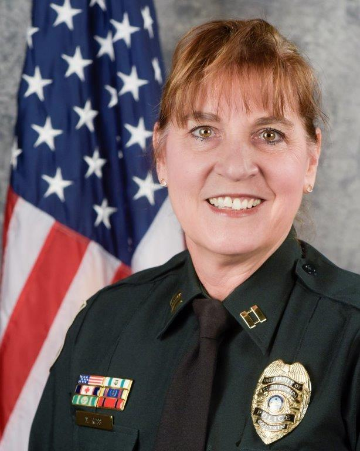

President
People & Alliance
SAFR’s strength comes from the people and organizations willing to work together to improve prevention, support, and trauma-informed response.
Our people
Meet the people guiding the Sunshine Alliance for First Responders.

President
Vice President
Treasurer
Secretary
Working together
Board Member
Board Member
Board Member
Board Member
Board Member
Alliance Organizations
Organization names are reproduced from the existing SAFR website. Logos and outbound links can be added after permissions and current participation are confirmed.